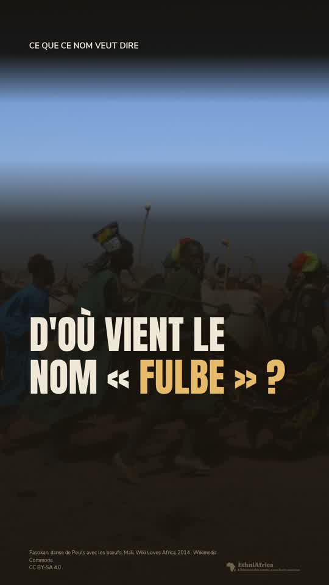

Chez nous, dans la vallée du fleuve Sénégal, on se dit Haalpulaar'en, « ceux qui parlent le pulaar ». J'ai appris le mot Peul à l'école.
D'accord, merci.
D'où vient le nom · Peuple
Le nom Peul désigne un peuple qui se nomme lui-même Fulɓe, et Pullo pour une seule personne. D'autres noms existent : Haalpulaar'en, Futankooɓe, Fula, Fulani, Fellata et Toucouleur. Les sources ne s'accordent pas toujours sur leur origine ; nous les présentons plus bas.
Peul est le nom courant en français. Il viendrait du wolof.
↓ Du plus récent au plus ancien
Usage contemporain
Forme française du nom. Les sources consultées la font venir du wolof, où le peuple est nommé d'une forme proche : pal chez Nussbaum, cité par Breedveld ; Pë'l dans l'article de Wikipédia ; Maurice Delafosse, rapporté par Tauxier, écrit que les Wolof prononcent Peul le radical de Foulbé.
Forme courante en français, aussi écrite Peulh ou Peuhl. Un article d'Amadou Hampâté Bâ paru en 1966 rapporte que les Français disent « Peuls » ou « Peulhs ».
Rapporté dans un article de 1966
Le nom Peul est écrit « Peuls ou Peulhs » par Amadou Hampâté Bâ, à propos de l'usage français.
Personnes citées dans ce récit : Amadou Hampâté Bâ, à propos de l'usage français, écrit cette forme
Origine la plus ancienne connue du nom Peul
1842
Le nom Peul apparaît chez l'auteur que Louis Tauxier nomme D'Eichtal, qui sait en 1842 que ce peuple se dit « Foul ou Peul » au singulier. C'est la plus ancienne trace de ce nom que le projet connaît. Le peuple existait déjà avant lui.
Fin de ce que nos recherches retracent pour le nom Peul.
Leur nom
Fulɓe
Ce peuple se nomme lui-même Fulɓe. Ce nom a aussi son histoire : les sources proposent cinq explications de son origine, sans que l'une l'emporte.

Une vidéo sur ce peuple D'où vient le nom « Fulbe » ?Plusieurs sources expliquent l’origine de ce nom. Voici leurs 4 récits, rangés par type de source.
Pour les autres noms de ce peuple, d’autres sources existent : des archives, des organisations intergouvernementales, des références linguistiques et des articles de presse. Choisissez un nom plus haut pour les lire.
Nous pensons qu’une meilleure connaissance des histoires et des liens entre les populations d’Afrique peut nourrir la compréhension et la coopération.
[THÈSE — texte à fixer]
Une information vous semble inexacte, incomplète ou mal présentée ?
Vous pouvez nous signaler le passage concerné et proposer une source ou un témoignage. Les contributions sont examinées avant d’être intégrées.